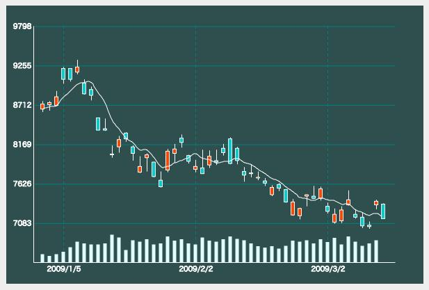

jqCandlechart.jsとは
jqCandlechart.jsは<canvas>にローソク足チャートを表示するjQueryプラグインです。
Moving average line and the volume is viewable in the simple methods。
Demo: jqCandlechart.js
Sample image:

How to use
1) Preparation of HTML and read the plug-in
<script src="jquery.js" type="text/javascript"></script>
<script src="jquery.candlechart.js" type="text/javascript"></script>
In addition, I will prepare to HTML on the canvas for drawing。
<canvas width="400" height="300" id="cv01"></canvas>
2) Preparation of data
The drawing of Candlestick, data of four open, close, high, lows are required. I will prepare a two-dimensional array this In this case, if you set a string to a fifth of the array, and string vertical border appears as a label。
var tick = [
[200,250,260,190],
[250,280,280,190,"4月1日"],
[280,210,280,180]
];
Prepare an array and moving average trading volume as well。
var vol = [1000,1200,1100];
var avg = [240,260,270];
3) Drawing
正常に読み込まれていれば、jQueryのプラグインとしてメソッドが利用可能となっていますので、以下のようにメソッドにデータを渡すことで、チャートが描画されます。
メソッドチェーンで出来高や移動平均を追加表示できます。
$("#cv01").candleChart(tick) // ローソク足の初期設定と描画
.ccVolume(vol) // 出来高の描画
.ccMA(avg,"#FFFFFF"); // 移動平均線の描画
| メソッド | 説明 |
|---|---|
| .candleChart(data,options) | チャート描画の基本メソッドです。 データとオプションを引数として与えると、オプションに沿ったローソク足を描画します。 引数にはオプションのみ、データのみを与えることも可能です。 |
| .ccTick(data) | ローソク足を描画します 画面クリアしませんのですでにローソクや移動平均線があった場合、単純に上書きします。 |
| .ccVolume(vol) | 出来高を描画します。 引数の配列中最大値から自動で個々の高さを調整します。 |
| .ccMA(avg,color) | 移動平均線を描画します。スプライン補間で値の補間を行います。データ次第で移動平均以外のまったく別の値を表示することも可能です。 |
| .ccClear() | ローソクチャートを初期化します。 設定色で塗りつぶして基本罫線を引き直します。 |
| .ccStatus() | チャートに設定されている値を取得します。 ※メソッドチェーンが繋がらなくなります。 |
4) Option
チャートの背景色やローソクの太さなど、オプション指定することで多様なチャートを描画可能です。
オプションは以下のようにオブジェクト形式で複数設定が可能です。
$("#cv01").candleChart(tick,{
'width' : 600,
'bgColor': "#2F4F4F",
'cdLineColor': "#FFF",
・・・
});
| オプション | デフォルト値 | 説明 |
|---|---|---|
| width | 400 | チャートを表示するcanvasの幅 |
| height | 300 | チャートを表示するcanvasの高さ |
| ofX | 50 | canvasとチャートの間の左右余白 |
| ofY | 30 | canvasとチャートの間の上下余白 |
| bgColor | #FFF | 背景色 |
| cdWidth | 5 | ローソクの太さ |
| cdLineColor | #000 | ローソクの芯と線の色 |
| cdUpColor | #FFF | 上昇時のローソクの色 |
| cdDownColor | #000 | 下降時のローソクの色 |
| voColor | #CCC | 出来高の色 |
| liColor | #CCC | 罫線の色 |
| maColor | #00F | 移動平均線の色 |
| liNum | 5 | 縦罫線の数 |
| upper | 250 | チャートの上限値 |
| lower | 100 | チャートの下限値 |
| autoScale | false | チャート上限値と下限値を自動計算するかどうか。 |
If you want to automatically calculate the upper and lower limit of the chart, the number of horizontal rule will also be automatically calculated, it is no longer a good number of cut。 Because I think that there also be aligned or the upper and lower limit in more than one chart, and it is set not to automatically calculated by default。